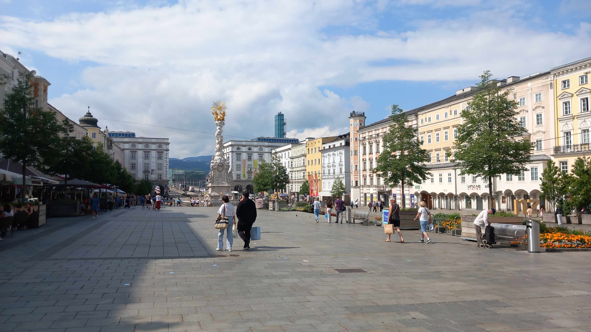
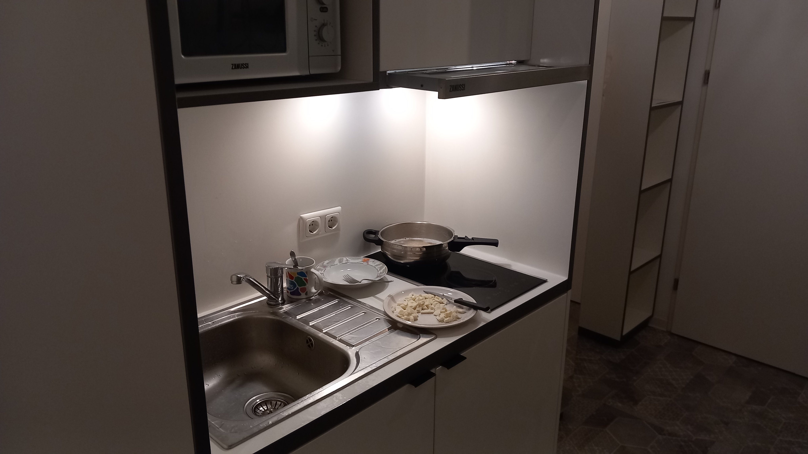
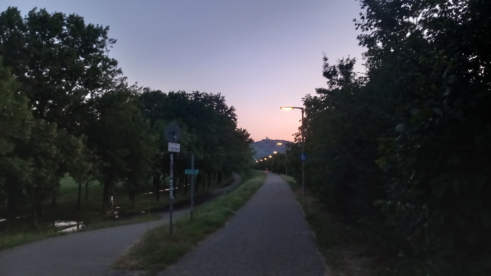

Giovanni's Diary > Chronological > Ephemeris > Entries >
2025-07-04 - Set up
I had a few chores to do today before taking some time to relax since my arrival here. In particular, I needed to get equipment to cook and stuff for the bathroom so I can finally take a shower. So, I looked for shops of second hand items; not only because it is wasteful to buy brand new items, but mainly because it is cheaper to get used ones. Most of these types of shops sell clothes but there are some where you can find anything, so I went out towards the city center.
Since the shop I found would only open at 11 am, and I was already awake at 7, I took some time to explore the city and the path I need to take to work, I also managed to buy groceries and come back in my room before 11. Finally I went to this second hand shop, it is close to the bridge where the tram passes; the shop was full of stuff all on top of one another, from keyboards to carpets to chairs. Obviously they had everything I needed, however there was a problem that made the whole experience uncomfortable and somewhat funny.
The owner did not know English, not a single word. I do not know German, I assumed she didn't even know Italian. So we were stuck with a great barrier, I tried to communicate with very simple words like "money?" "cooking" but it was all worthless and confusing…
After a few minutes, I decided to simply open google translator and translate what I needed. Things went better: she would point at some things that I was interested, I pointed to the ones I wanted, and she wrote the price on a piece of paper. That worked and I got everything, which includes two plates, a fork, spoon and knife, a pot, a mug and two bathroom towels. All of this for 8.50 euro! I saved so much money going there, sadly it was harder than expected.
This made me think about how the language barrier is a difficult obstacle for many people. Imagine how merchants would trade internationally hundreds of years ago, or Italian cities in the renaissance, it must have been a similar experience.
Obviously it started raining a lot and my second pair of shoes got completely wet. I already got used to this, but it was funny how so many people in the city center did not have an umbrella and got completely wet. Yesterday it rained heavily, and the forecast of today told the same thing, so wouldn't you think bringing an umbrella would be a wise idea? Apparently that was not a concern for some people.
I came in my apartment for lunch with the newly bought things. Since I needed to clean everything thoroughly, I didn't cook and I ate a sandwich instead. I washed and dried my clothes and the bath towels while I was cleaning the kitchen equipment. A thing I wanted to visit was the central public library, so I took the tram and a walk to the library, but I didn't stay a lot of time there since the public WiFi was not working for me (I was getting SSL error).

Figure 1: The city center
During this time I also bought a physical diary. I have many of these and they hold great sentimental value for me. Another physical diary for my Linz adventures seemed a great idea. Obviously I am not sharing everything publicly, just what I am comfortable telling anyone.
Finally, I came home and I could have my (deserved) bath and cook my first meal. This felt great, I now have everything set up and I can move my attention into other things. Thankfully, having already lived alone for three years made me conscious of everything that I need to live and take care of myself so these two days were easy in terms of planning.

Figure 2: The Chef's table
While I was cooking I listened to the latest album of Sleeping at Last "Atlas: Reach". While I was eating I watched "Better call Soul", the prequel of Braking Bad which I really enjoyed.
There is now the sunset so I'll probably take a walk now, then I'll setup a study plan for my exams.

Figure 3: Sunset (almost) by the river
I didn't manage to be exactly near the river, but I was close. If I were smarter I would have taken the tram to the bridge, that's a TODO item for another day.
Btw, I think I will start posting updates on my spending so you (and the me of the future) gets an idea of how much I am spending day by day.
Expenses ||
------------------------------------++----------
expenses:food || $22.78
expenses:household:bathroom || $7.86
expenses:household:kitchen || $8.74
expenses:household:washing-machine || $7.49
expenses:legal || $19.92
expenses:non-essential || $4.45
expenses:rent || $1406.00
expenses:travel:arrival || $39.47
expenses:travel:public-transport || $60.50
------------------------------------++----------
|| $1577.21
I use the ledger format to store my transaction, and hledger for the fancy reports. I will make an explanation of how I use these in the future.